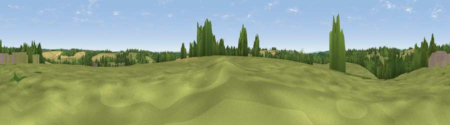

Viewpoint near Whiteway
#29448 in England · top 58% of its area beats it · near WhitewayThe view, rendered

A 360° render of this exact spot computed from the terrain model, tree cover and land cover — summer colours, afternoon light, calibrated against photographs of famous viewpoints. Real trees, hedges and buildings will differ in detail.
The panorama
Grey silhouette: terrain skyline in each direction (720 bearings, Earth curvature and refraction included). Dashed green: skyline with trees (+15 m) and buildings (+8 m) as obstacles. Blue strip: how far the ground is visible on each bearing.
Where the view opens
Wedge length = distance to the farthest visible ground on that bearing (vegetation-aware). Rings at 10, 25 and 50 km.
What fills the view
49% grassland · 30% cropland · 20% woodland · 1% built-up
Angular shares of the visible panorama (visual magnitude), not map area. Landscape diversity 0.47 (0–1 Shannon).
Key numbers
More beautiful places nearby
The staircase of upgrades: each row has a higher view potential than everything closer. Driving times are estimates from straight-line distance, calibrated against real road routing — check an actual route before setting out.
| Place | Direction | Drive | Score |
|---|---|---|---|
| Viewpoint near Whiteway | S · 1 km | ~2 min | 50.0 |
| Viewpoint near Sheepscombe | W · 3 km | ~7 min | 54.8 |
| Viewpoint near Slad | SW · 3 km | ~8 min | 55.8 |
| Viewpoint near Great Witcombe | N · 4 km | ~10 min | 65.7 |
| Birdlip Hill | N · 5 km | ~11 min | 71.7 |
| Painswick Beacon | WNW · 5 km | ~12 min | 79.6 |
| Viewpoint near Great Witcombe | NNW · 6 km | ~13 min | 80.5 |
| Nottingham Hill | NNE · 20 km | ~34 min | 80.9 |
51.78027, -2.12642 · source: screening · position refined by local search. Computed location — check access rights before visiting.